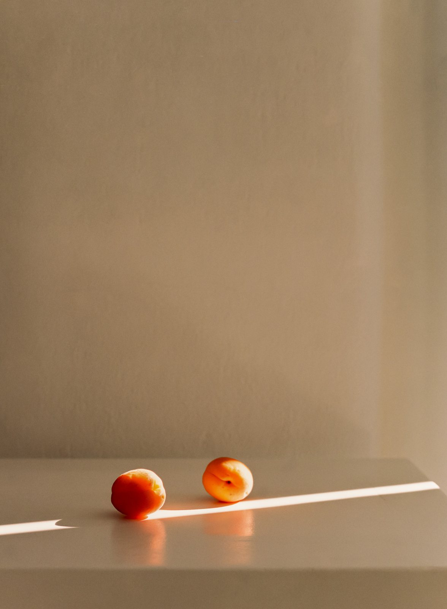
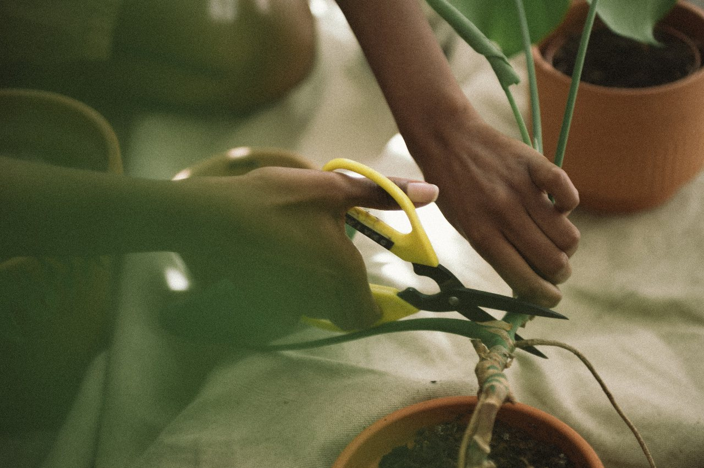
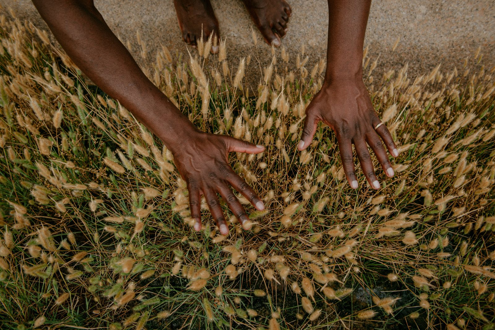

Folding & Sowing
Eight pictures, from a dry coloured page to a small box of soil with a seed in it. Raising the walls takes a try or two, so fold one box from a plain sheet of the same paper first.
1Attend to the whole page. Let it dry.
2Fold the top corner across until the edges meet.
3Wet the crease and tear. Keep the strip.
4Open the square. Crease the other diagonal, then bring all four corners to the centre.
5Fold each edge to the centre, then open it again. All four.
6Open two opposite flaps. Stand the two long sides up.
7Lift each end. The corners tuck in; fold the point down inside.
8Fill with soil. Sow seed native to where you live.

When you fold the top corner across, a band of the page is left below the triangle. Wet the crease with a brush and tear along it. The strip comes away with a soft, furred edge. Keep it somewhere flat; it’s the part of the page that stays with you, and in time it goes into your weaving.
Fill the box with soil. Before you choose a seed, ask someone nearby who knows plants what belongs in the ground where you live: a native plant society, a community garden, a seed library, a neighbour who has grown things for years. Press one or two of those seeds in, as deep as the packet or the person you asked suggests, and water gently.
Then the box goes into the earth: the lines, the colour, the hour you spent. Plant it in your own garden, a container, or a place you have been invited to plant. You cover it over and stand up, and there is nothing to look at. You can’t check on what you made. I can’t promise you a seedling, either. Some seeds wait a year. Some never come up.
If you used anything that won’t break down, such as acrylic, permanent marker or wax crayon, lift the seedling out when you plant it and keep the paper.


What this practice is not. Seedling Pages is a creative health practice, not therapy. It is not a diagnostic tool, an assessment, or a replacement for professional mental health support. If you are working with difficult feelings and would like more support, please reach out to a qualified therapist or counsellor.
If you are in distress, please reach someone who can help now: in British Columbia, 310-6789 (no area code); anywhere in Canada, call or text 9-8-8.